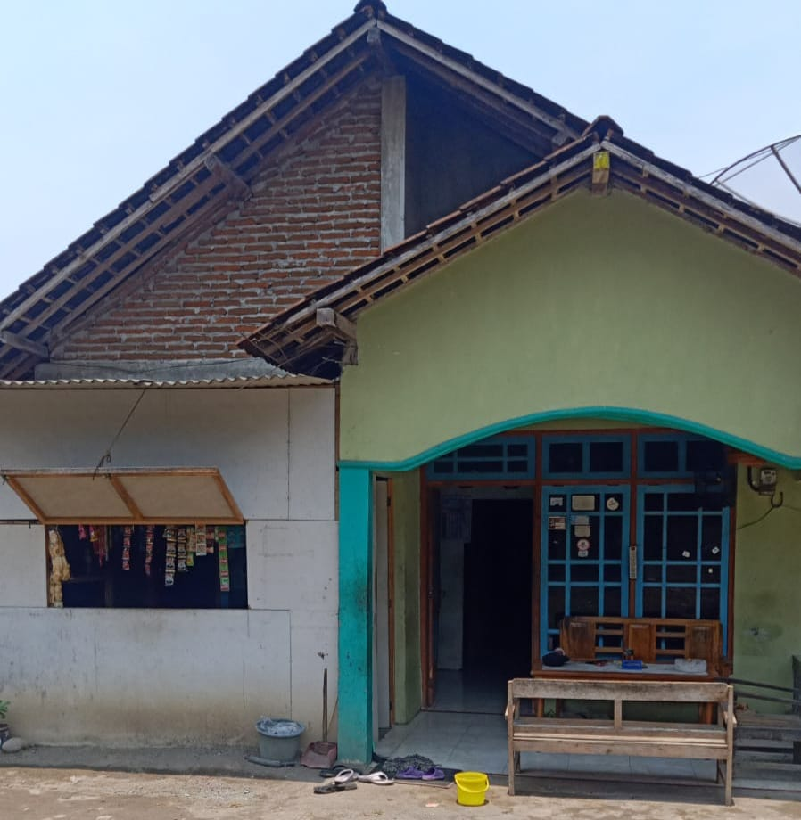

Brown Field
Home
About Us
Blog
Gallery
Contact
Tampilan Warung!
Walaupun sederhana tapi memiliki nuansa yang lumayan menyejukkan
penampilan depan warung
Hanya seperti ini saja tampilan warungnya tidak ada yang istimewa dikarenakan belum ada biaya untuk merenovasi

warung maisaroh
penampilan warung maisaroh yang terletak di pertenggahan desa